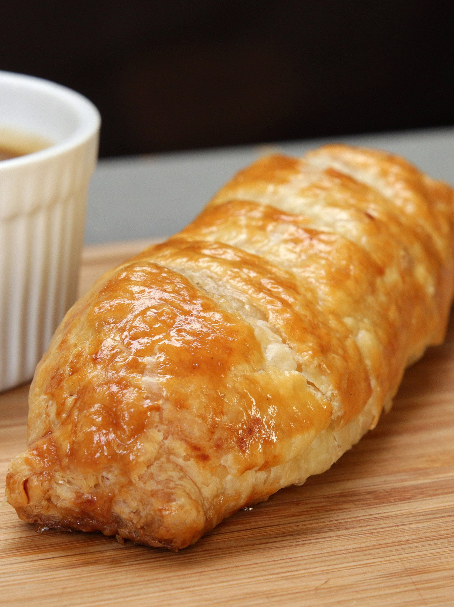

Bangers and Mash Sauasge Roll

Description
A take on the classis British Bangers and Mash.
Very good with a nice dipping sauce.
Ingredients
- 4 sausages
- mashed potato, cold
- 4 pieces puff pastry, thawed
- 1 egg
onion gravy, optional for a side
Steps
- Brown the Sausages on all sides in a large skillet - until mostly cooked through. Set aside to cool slightly.
- Unroll each sheet of puff pastry and cut into 4 pieces.
- Spread mash over each pastry, top with cooked sausage and additional mash.
- Roll up each sheet - pinch together to seal and trim off any excess.
- Place on a greased baking sheet - seam side down - and brush each roll with beaten egg.
- Bake in a preheated oven at 190˚C (375˚F) for 25-30 minutes - until the pastry is golden and crispy on all sides and the meat has cooked through. Serve with a side of Onion Gravy.
- Enjoy!